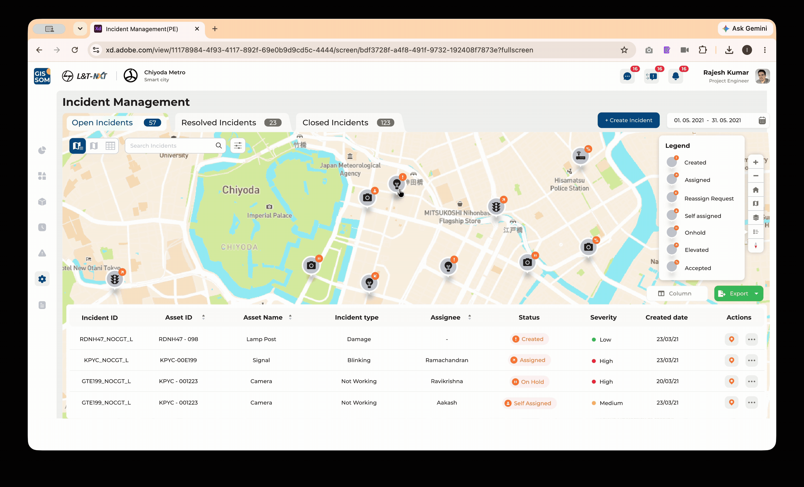
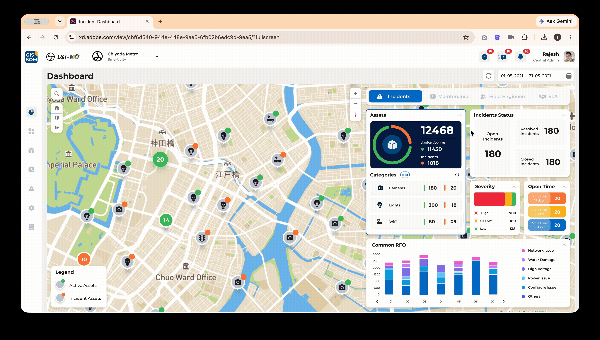
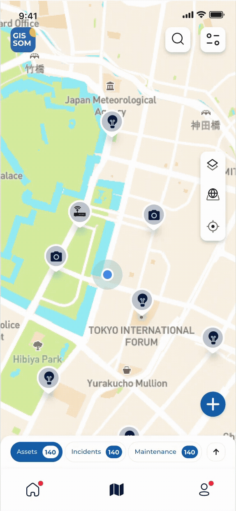
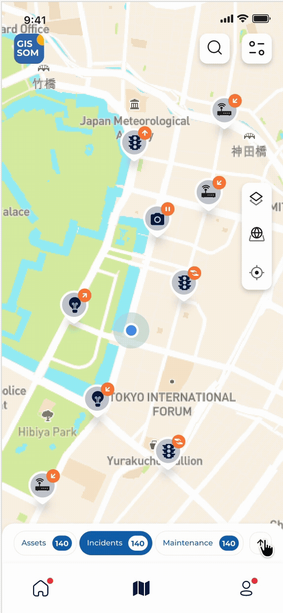

GIS for
Smart Operations and Maintenance
A geospatial enterprise platform that lets field engineers, project teams and central operations manage assets, incidents, maintenance and SLA compliance from one operational ecosystem.

One shared operating picture: asset health, incidents, maintenance, field activity and SLA.
Tools usedThe clock was always discovered, never watched
Operations ran semi-automated and siloed. Field data lived on paper, asset records in one system, incidents in another, and SLA reporting was reconstructed by hand at month-end.
- 01Fragmented operations
Assets, incidents and maintenance were tracked in separate tools with no shared location context.
- 02No live visibility
Project teams could not see real-time operational status across a portfolio of assets.
- 03SLA exposure
Delayed resolution and missed maintenance cycles triggered penalties that were noticed too late.
The design problem underneath: two user groups, one truth, opposite contexts. The control room wants density. The field wants one thing at a time.
Framed around role, not feature
| User | Surface | Primary goal |
|---|---|---|
| Field Engineer | Mobile | Execute assigned incidents and maintenance on site |
| Project Engineer | Web | Monitor assets, act on incidents, keep project within SLA |
| Project Admin | Web | Manage assets, assignments and project workflows |
| Central Project Engineer | Web | Monitor data across a hierarchy of projects |
| Central Project Admin | Web | Create and govern projects, users and configuration |
- 01Everything starts with location
Every question began with where, then narrowed to what, how urgent and who is nearest.
- 02The field loses connectivity
Engineers work one-handed, outdoors, often with no network. Offline capture was non-negotiable.
- 03Managers need visibility
Operational status was assembled manually, so decisions lagged behind reality.
- 04SLA must be predicted
Nobody could answer "will we breach this month?" until the month had already ended.
- 05Evidence builds trust
Managers did not believe "resolved" without proof of who, where, when and what.
- 06Every deployment differs
A smart-city project and a telecom project share structure but no taxonomy.
Research is what users said. Insight is what it meant.
- Location is the primary UI
The map is not a feature inside the product — it is the surface the product runs on. Every module renders on it.
- Proximity drives decisions
Distance from current location became a standing element on every card, turning a list of incidents into a route.
- Trust requires evidence
Geotagged photos, timestamps and a chronological timeline convert a status claim into a verifiable record.
- Configuration is a product
If every client needs its own taxonomy, SLA rules and workflows, that layer deserves the same rigour as operations.
Enterprise realities that shaped the design
| Constraint | Design response |
|---|---|
| Offline field environment | Local capture with automatic sync on reconnect, plus a persistent offline indicator |
| Very large asset volume | Map clustering with state, so density itself communicates health |
| Multi-tenant deployments | Configurable categories, checklists, SLA rules, workflows and alerts |
| Deep organisational hierarchy | Role-based navigation from central → project → asset level → child asset |
| Contractual SLA compliance | Live SLA dashboard authored in plain language against a visible threshold |
| Dense enterprise screens | 8-pt grid, type scale down to 10px, three view modes per module |
A clear separation between execution and governance
Mobile is optimised for field execution. Web adds monitoring, coordination, configuration and reporting. Both operate on the same three core objects.
Dashboard
Incident statusMaintenance statusMap Workspace
AssetsIncidentsMaintenanceSearch & filtersProfile
Check-in / outMessagesNotificationsReset passwordSwitch projectDashboard
IncidentsMaintenanceField engineersSLACategories
CategoriesSubcategoriesAssets
Map viewHybrid viewTable viewImport / editIncidents
OpenResolvedClosedTimelineMaintenance
IntervalsAssignmentChecklistsEvidenceConfiguration
Org hierarchyAsset relationsFunctional rulesAutomationUsers & alertsReports
AssetsIncidentsMaintenanceField engineersUtilisationRole access from the original IA: CPE · Central Project Engineer, CPA · Central Project Admin, PE · Project Engineer, PA · Project Admin.
Three journeys around the same asset
Location and asset context are preserved as work moves from detection to action to verification.
Asset flow- 01Locate
Search, filter or select on the map.
- 02Understand
Identity, hierarchy, status, address, distance.
- 03Inspect
Incident and maintenance history.
- 04Act
Report incident, plan work or update data.
- 05Monitor
Track health in dashboard and reports.
- 01Create
Select asset, type, severity, evidence.
- 02Triage
Severity, open time, location, SLA.
- 03Assign
Match skill, workload and distance.
- 04Resolve
Navigate, enter geofence, submit proof.
- 05Close
Review timeline, RFO and attachments.
Different roles. Different definitions of done.
Each map compares actions, needs and the corresponding design response across one operating cycle.
Quiet interface. Strong operational cues.
- 01Map first, list always
The map answers where. The list answers which. Never force a choice between them.
- 02Status before detail
Priority, progress and exceptions must be readable before a single label is read.
- 03One task at a time
The mobile app never asks an engineer to hold more than one decision in their head.
- 04Configuration mirrors operation
Reuse familiar patterns so governance never feels like a second product.
A process made visible at every gate
- 01Research
- 02Architecture
- 03User Flows
- 04Wireframes
- 05Visual Design
- 06Prototype
- 07Testing
- 08Handoff
| Insight | Design decision | Where it landed |
|---|---|---|
| Location is the primary key | Map canvas as the persistent shell | All web modules |
| Field needs proximity and proof | Distance badge, geofence alert, geotagged imagery | Mobile incident & maintenance |
| Trust needs a narrative | Incident timeline of every status change and remark | Incident details |
| Managers need forecasting | Live SLA completion against an authored threshold | SLA dashboard |
| Teams need escalation paths | Self-assign, reassign, suggest, elevate, on-hold | Incident actions |
| Deployments differ | Category, checklist, SLA, workflow and alert builders | Configuration suite |
Thousands of assets, one legible canvas
Density was the hardest craft problem. Readability was solved at three levels.
- DASHBOARDPriority hierarchy
KPI grouping, severity distribution and open-time buckets of more than 8 hours, 7 days and 14 days.
- LARGE DATAThree views, one dataset
Map clustering with incident state, hybrid for the working middle, table for bulk work and export.
- DECISIONSOperational cues
Severity colour, aging buckets and SLA visibility make the next decision obvious without reading.
| Pattern | Why it exists |
|---|---|
| The card as atomic unit | One card carries category, subcategory, parent asset, ref ID and address — identical across dashboard, map, list and mobile |
| Progressive disclosure | Checklists nest component → subcomponent → activity, collapsed by default with completion count and percentage |
| Persistent map toolset | Legend, zoom, home, basemap, layers and compass appear identically on every screen |
Tested with real engineers, on live project data
Engineers resolved incidents from the parking lot, or from home. Location honesty was unenforced.
Geofence validation. Resolution unlocks only inside the asset buffer region, with an alert that explains why.
Bulk maintenance setup was unusable one asset at a time. Scheduling 300 assets was abandoned mid-flow.
Map-based bulk assignment with lasso and multi-select, select/deselect all, and a live selected-asset count.
Table users lost spatial context. Map users could not do bulk work. Both camps asked for the other.
Hybrid view, and universal Map / Hybrid / Table switching on every operational module.
Checklists were re-authored identically across near-identical subcategories — pure duplicated effort.
Checklist groups, click-to-copy between categories, and bulk import with file preview.
Incident status alone did not settle disputes about what actually happened on site.
An incident timeline recording actor, time, remark, attachment and closing RFO in sequence.
Built as governance, not decoration
A single style guide across mobile and web, created to keep as a reference and ensure consistency of the user interface.
Colour — primaries, greys, semantics- #081C49
- #0D68B3
- #4B95E8
- #F4F4FB
- #F22C44
- #3FBF62
- #FCB713
- #FC8035
- #7C7C7A
- #C6CBD4
- #F2F2F2
- #231F20
All dimensions, padding and margins use multiples of eight.
Components- Core controls
Large, small and tertiary buttons. Text fields and date pickers in four states: inactive, focused, error, correct.
- Map components
Filled icon set, map pins, cluster views and the persistent map tool group with legend and compass.
- Operational cards
Asset, incident and maintenance cards sharing one field order, reused identically across both platforms.
The value was not visual consistency. It was delivery speed — Configuration and Reports were composed from existing tokens rather than designed from zero.
The platform in use
Incident Management
Open, Resolved and Closed as counted tabs, with a legend mapping every status badge and the same incidents available as a sortable table.
- Map / Hybrid / Table switching
- Assign, reassign, suggest, elevate, on-hold
- Chronological timeline with RFO and attachments
- Column filters, pagination and PDF/XLS export

Operational Dashboard
What a project manager sees at nine in the morning — asset totals, category breakdown, incident status, severity distribution, open-time buckets and common RFO.
- Incident, Maintenance, SLA and Field Engineer tabs
- Current month by default, with a date filter
- Cluster views separating active and incident assets
- Legend, project selection and reset

Field Execution
The segmented control carries live counts for Assets, Incidents and Maintenance. The blue dot is the engineer, and distance from it turns a list into a route.
- Offline capture with automatic sync
- Geofence-validated resolution
- Nested maintenance checklist with completion percentage
- Geotagged before and after evidence


| Module | Capability |
|---|---|
| Asset Management | Map, hybrid and table views, cluster states, create, edit, bulk edit, import with preview, export |
| Category Management | Categories and subcategories with icon gallery and consequence-aware delete dialogs |
| Preventive Maintenance | Interval scheduling, map-based bulk assignment, checklist execution and evidence |
| Configuration | Org hierarchy, asset relations, levels and priority, functional rules, automation, alerts, users |
| SLA | Asset, incident and maintenance SLA authored as readable statements with escalation teams |
| Reports | Asset, incident, maintenance, field engineer and user reports in summary and specific modes |
What it added up to
Operational outcomes- 150K+
Assets spatially monitored
- 250K+
Users of the practice's solutions
- 99.5%
Asset uptime supported against SLA
Figures are from the geospatial practice portfolio and are practice-level, not GISSOM alone.
Business outcomes- Closed the visibility gap
Asset health, incidents, maintenance and field activity became observable in one place, in real time.
- Improved incident response
Assignment moved from name-picking to an informed choice based on skill, workload and distance.
- Enabled multi-project governance
Central teams could structure hierarchies, configure rules and compare projects without engineering support.
- Unlocked platform expansion
Success here directly enabled an adjacent surveying and data-collection product reusing the same system.
The design system became the delivery plan
GISSOM is where I stopped being a screen designer. The decisions that mattered most were not visual — the geofence rule, the mandatory remark, the timeline and the configuration model were each a policy expressed as an interaction. Making them explicit removed the ambiguity loop between business analysis, design, development and QA.
-
What I learned
Operational systems are not consumer apps. Maps become decision-making instruments, and configuration deserves the same attention as execution.
-
What I would improve today
Predictive SLA forecasting, a dedicated WCAG 2.1 AA pass, AI-assisted incident assignment, and voice-first field capture.